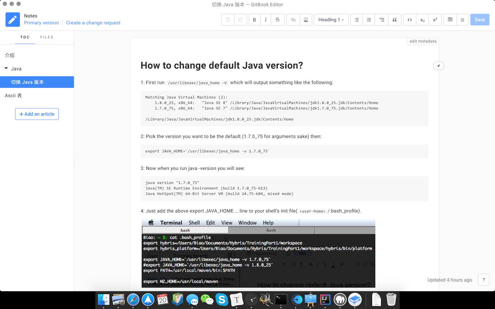

GitBook 是一个使用 Markdown 文件，用来写书、说明文档等的工具，它的官网已经有 5 万多本使用 GitBook 写的书了，现在不少公司都开始用 GitBook 来写项目文档、使用手册等。下面就简要的介绍怎么使用 GitBook，首先需要安装下面这些软件:
- 安装 Git
- 安装 Nodejs
- 安装 GitBook:
npm install gitbook -g - 安装 GitBook-Cli:
npm install gitbook-cli -g
本地搭建 GitBook
本地搭建 GitBook 的好处是我们可以自己管理文件的存储，例如可以放到公司的 Git 私服上:
创建目录例如 Pandora 用于存放书的文件，进入目录
创建文件 README.md 和 SUMMARY.md，它们是 GitBook 最重要的 2 个文件，README.md 对书进行介绍，在 SUMMARY.md 中描述书的目录结构，其内容可参考如下:
README.md:
1
本书用于介绍 Pandora 项目的使用说明
SUMMARY.md:
1
2
3
4
5
6
7
8
9
10# Summary
* [简介](README.md)
* [第一章](chapter1/README.md)
* [第一节](chapter1/section1.md)
* [第二节](chapter1/section2.md)
* [第二章](chapter2/README.md)
* [第一节](chapter2/section1.md)
* [第二节](chapter2/section2.md)
* [结束](end/README.md)执行
gitbook init:会自动创建 SUMMARY.md 中描述的目录结构对应的文件夹和文件，每次执行这个命令都会创建还没有还不存在的文件和文件夹，但是不会影响已经创建的，所以不用担心多次执行
gitbook init导致数据丢失编辑书的 Markdown 文件，例如 section1.md 等
安装插件
gitbook install执行
gitbook serve，在浏览器里访问 http://localhost:4000 就可以看到上面写的书了，以后常用的也是这个命令，当文件变化后可以在网页中及时看到新的变化Bug: Windows 中
gitbook serve运行后，当文件发生变化时不是自动更新网页而是退出，可以使用下面的脚本来运行gitbook serve解决这个问题：1
2
3
4@Echo off
:Start
call gitbook serve
goto Start把上面的文件保存为
gs.bat放到 GitBook 目录中，运行gs.bat就可以了。指定输出目录
gitbook build src dest:执行
gitbook serve或者gitbook build后会在项目中生成_book目录，可以自定义输出目录而不使用默认的_book，例如gitbook build . ~/Desktop/xxx
使用在线 GitBook
使用在线的 GitBook 挺方便的，但是由于网络原因，很多时候在国内访问有问题，如无必要不推荐使用这种方式。
下载 GitBook Editor，GitBook 官方提供的编辑器: https://www.gitbook.com/editor，并创建一个账号，在里面创建一本书就可以开始写了，左边是章节目录，右边是编辑区：

编辑后点击保存，同步到 GitBook 的仓库。执行 gitbook server .，在浏览器里访问 http://localhost:4000 就可以看到上面写的书了。
插件
Gitbook 本身功能丰富，但同时可以使用插件来进行个性化定制。Gitbook 插件 里已经有100多个插件，可以在 book.json 文件的 plugins 和 pluginsConfig 字段添加插件及相关配置，添加后别忘了进行安装。
1 | { |
Expandable-Chapters-Interactive
生成 HTML 的章节不能展开和收缩，太多时不方便查看
语法高亮插件 Prism
可参考 http://zhaoda.net/2015/11/09/gitbook-plugins/
导出 PDF
GitBook 导出 PDF 依赖 ebook-convert, calibre 中包含了 ebook-convert：
安装 calibre，到 https://calibre-ebook.com 下载
把 ebook-convert 加入到系统环境变量
Windows: 添加到 PATH
Mac:
1
2
3ln -s /Applications/calibre.app/Contents/MacOS/ebook-convert /usr/local/bin
或者
export PATH=$PATH:/Applications/calibre.app/Contents/MacOSLinux: 参考 Mac
执行导出命令
- 进入项目目录
- 执行
gitbook pdf - 在项目目录中会生成 book.pdf
修改样式
新建 styles/website.css，在其里面修改样式，针对上面 book.json 中的插件，增加样式如下:
1 | body { |